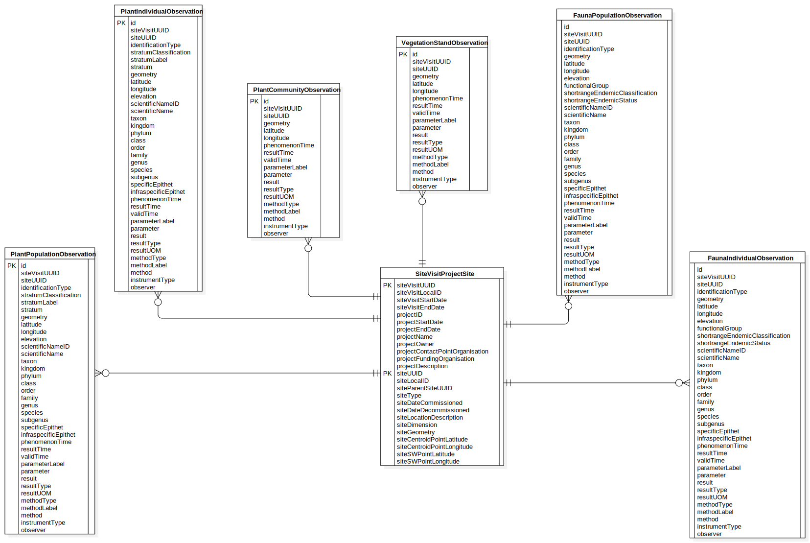

Flattened Data Model
ERDDataModel
Plot-X - Plot Data Exchange Standard
::
Plot-X Vegetation Implementation
::
Flattened Data Model
Description
none
Diagrams

ERDDiagram1
Entities
SiteVisitProjectSite
PlantPopulationObservation
PlantIndividualObservation
VegetationStandObservation
PlantCommunityObservation
FaunaPopulationObservation
FaunaIndividualObservation
Properties
Name
Value
name
Flattened Data Model
Owned Elements
ERDDiagram1
SiteVisitProjectSite
PlantPopulationObservation
PlantIndividualObservation
VegetationStandObservation
PlantCommunityObservation
FaunaPopulationObservation
FaunaIndividualObservation